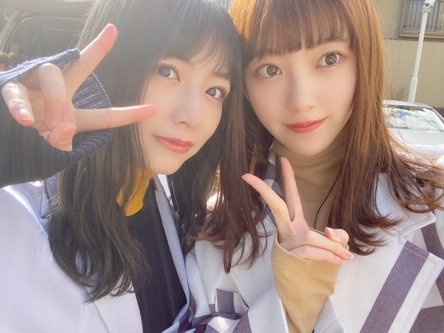

2020/0228Fri転んでも立ち上がる
3月7日の2期生ライブ中止の発表がありました。
楽しみにしてくださっていた皆さん、準備を進めていてくださったスタッフさん共に私も私たち2期生も正直悔しい思いでいっぱいです。
ですが、みなさんの体調がなによりも大事なので、致し方ないことだと思います。いつかまた、2期生ライブが開催されることを願ってこれからも頑張ろうと思います。
向かい風の方が燃えます。絶対に実現させたい。
不甲斐ない、遣る瀬無い気持ちがぼんやりと続く毎日...
私はみんなの笑顔が見たいだけで、守りたいだけなんです。
次、ライブの開催が決まったら
この気持ち、爆発させたいと思います。
それまでダンスのスキルアップに努めます！
みなさんも体調には十分に気をつけてお過ごし下さい...！
2期生、だいすき。
ファンの皆さんも、だいすき。
優しさをありがとう。

2020/02/28 18:12


コメント(550)
もっともっとモチベ高くライブ参戦できそうな気がするし
楽しみにしてます！
更新ありがとうございます
いい言葉だと思う。
俺たちも諦めないよ。せっかくみんなが頑張ってくれてるんだから。
また、笑顔で会える日を楽しみにしているね。
更新ありがとう。
みんなの体調第一だと思う
みおなちゃんも気をつけてね！自分も体調には気をつけます
次、2期生ライブ開催されることになったら絶対申し込むよ！
2期ライブ俺も残念に思うけど、また開催できる日を楽しみにしてる！！そしたら、その時はこの気持ち爆発させる！めっちゃ声出す！！
これからも頑張ってね！！
バスラお疲れ様！
バスラ最終日のライブ神がめちゃくちゃかっこよかった！
自分ダンス辞めちゃったんだけどまたやりたくなった！
お互いにダンスがんばろうね！
2期生ライブずっと待つよ！！
LIVEに行けない私もこんなに悔しいと思うと、LIVEに行こうとしていた方や2期生の気持ちを考えるととても胸が張り裂けそうな気持ちです。
でも、未央奈も言っていたようにポジティブに受け止めて、さらにパワーアップして最高の仲間で最高のLIVEをいつか開催してほしいです。
みんなが笑顔であり続けてくれるだけで私は幸せです。
2期生ライブ残念でしたね...
この事態では仕方ないですね...しかし、
2期生の心構えはしっかり踏まえてます✨
向かい風の方が燃えるのも頼もしいです！
自分もライブ実現を切に願っております✌
堀北コンビもとっても凛々しく思います☺
乃木坂462期生は家で例えると柱、柱が無ければ家は崩れる、重たい荷物をずっと背負い続けてくれてる。乃木坂462期生がいなければ、3.4期生もいなかった。1期生だけじゃここまで大きくなってなかったと思う。糸を切らずに、保ち続けてくれてありがとう！！
本当に、心からありがとうって思うよ！！
ただ、これだけは言わせてください。
絶対に無理や、無茶だけはせんといてね！
2期生は2期生らしくあってください^_^
焦る気持ちも凄いわかります！でも、自分が自分である為には、焦らず、正直に、真正面から生きていくのが大切と思います！
でも！たまにはファンの皆にも、弱音も言ってね！
ファンは、メンバーに、癒し、幸せ、元気、活力、色んなものを貰ってます！支えてもらってます！
今度は、僕らがメンバーを支えてあげる番やと思います！
これからも、応援させてください！
ライブの中止はしょうがないことだよね(T_T)
けど、2期生ならいつか必ず開催出来ると信じてるよ！
今回、悲しいのは琴子ちゃんとの思い出を作る機会が１つ無くなったことだよ(T△T)
堀ちゃんの方が体調に気を付けてね(* >ω<)
いつか叶えられると思ってるし、期待してます。
一刻も早く収束する為には賢明な対応だと思います。
運営の方や2期生みんなに伝えたいことは、
『僕たちファンを守ってくれてありがとう！』です。
ブログ更新ありがとう！！
二期生ライブ非常に残念ですね！！
楽しみにしていただけにホントに無念な気持ちです。
でも、必ず実現してくださいね✨
応援してます
未央奈ちゃんも体調管理に気を付けて頑張ってください❗
二期生ライブが実現するその日まで
力を蓄えつつ待機します！
体調にはくれぐれもお気をつけ下さい。
2期生ライブの中止は本当に残念だね。
でも、またいつか開催できることを信じているよ！
その時には今よりもさらにパワーアップした2期生が観れることを期待しているよ
この悔しい気持ちは次のライブでぶつけてね！！
きぃちゃんのと写真ありがとう！
バスラの堀北コンビでの行くあては痺れたな〜！！
納品ウォーズ見たよ〜
衣装とか走っているのを見て、堀ちゃんが逃走中に出た時のことを思い出したな〜。なんか似てた笑
アクションやお得意の高速まばたきよかったよ
七転び八起き
堀ちゃんならできる。信じてる。
では、またね
２期生大好き！
バスラ4日間参戦させてもらいました
目の前での未央奈はめっちゃかっこよかった！！
2期生ライブは中止で残念だけど次の機会を待っておきます！
握手会楽しみです
向かい風の方が燃える！
私もいつかの二期生ライブまた当てられるといいな。
絶対に見届けたい
大好きだよー！
2期生ライブ中止は残念だけど健康が優先だからまたライブできるように頑張ろう
2期生ライブの実現応援してます！
2期生ライブが中止になったのはとても悔しいけど、未央奈ちゃんのブログを読んで、ますます燃えてきました。向かい風でも、逆風でもそれに立ち向かう。その方がやりがいがありますよね。
こちらも、またいつの日かを楽しみにそれまで頑張ります！
必ず実現させられるように、祈ってます！
ずっと言い続けます！
だから、絶対に実現させましょう！ずっと応援し続けます！
2期生ライブやって欲しかったけど今大変な状況だし、悔しい決断だよね。。。
琴子の最後かも知れなかったし。
でも、次やる時は思いっきり楽しんでほしい！！
二期生の本気を見たいです！！楽しみにしてます！！
未央奈ちゃんのレベルアップした姿を見たいです！
二期生大好きー！！！
体調には本当に気をつけてください！
これからも応援してます！
でも未央奈の言う通り！
みんなでこの困難を乗り越えましょう！
そして・・そしてきっと２期生ライブを実現させよう！
諦めない！絶対諦めない！
ファンのみんなもきっと諦めない！ 願ってる！
２期生みんなの諦めない気持ち大切にして欲しい！
絶対その気持ちは思った以上に早くにライブ復活の
実現に繋がると信じているよ！ 絶対に！
ホントに心の底から応援している！願っている！
未央奈の、みんなの、力が爆発する様なライブを
実現させよう！
その時の未央奈の弾ける笑顔、キレッキレのダンスが
楽しみ！ ホントに楽しみにしている！
頑張れ！ そしてファンのみんなも頑張ろう！
ファンのみんなで２期生みんなを支えよう！
号令を掛けよう！
絶対に、絶対に負けないから！ 信じているから！
頑張れ！２期生！ 頑張れ！未央奈！
次のパワーにして延期してよかったと思われるようにしたいね！
未央奈も体調に気をつけて。
すぐ来るであろう機会を楽しみにしています。
ファンも辛いけど1番悔しいのは2期生達だよね、
また2期生ライブやると信じて待ってる！！
発表があった時すごい嬉しくてずっと楽しみで
行きたかったけどこの状況だと仕方ないよね。
でもいつかまた2期生単独ライブできる時が来ると
思うからそれまでみんなで頑張って乗り越えましょう。
絶対にまた実現させましょう。
今よりもっともっと大きくなって。
それまでもそれからもずっと支えます。
僕に出来ることは影で応援することしか
出来ないけど今まで以上に応援します。
本当に未央奈含め2期生が大好きです。
ずっとずっと大好きです。
未央奈も体調に気をつけてね！
またコメントします！
我等友情永久不滅！
いろは。
未央奈さん、2期推しの自分も悔しい。もしメンバーや来てくれた方に移ったらって考えたら仕方ないけど、どうしてもこれまで2期生が頑張って来たのに…って考えると泣けちゃいます(´；ω；｀)
この日の為に今までの日々があったと思える日が来ますように、未央奈さん大好き、ありがとう( ' ' )♡
「みなさんの体調がなによりも大事」って
ありがとうございます！
でも逆に僕はメンバーの体調も考えると
最善の選択だったと思います！
今無理するよりも将来があるんだし、
その時を目指して、楽しみにして
日々精進していけますもんね！！！
顔をあげて、みるのは次です！！！
これからも応援しています！！！
未央奈ちゃんらしく頑張ってくださいね！！！
やっぱり2期生のみんなが1番悔しいですよね、でもまいちゅんも言ってた言霊だって、次ライブの開催が決まることを祈ってます！2期生大好き！2期生応援してて良かった！2期生しか勝たん！逆風もそのうち追い風になるはずです！
応援してます！
コロナ気をつけてね！
2期ライブの中止は本当に残念だし悔しい。
次の機会があることを信じて待ち続けます！！
未央奈さんも体調に気を付けて！
ふぁいとーー！！
２期生単独ライブ今回は中止になっちゃったけどいつか実現できますよ。
頑張れ２期生～
未央奈ちゃん率いる２期生が大好きです
みり愛ちゃんもかわいくて大好きです
みんなで絶対実現させようね！メンバーが不甲斐ないなんてことはほんとにないから、未央奈らしく2期生らしくいてくれれば大丈夫よ！
ファンの皆も未央奈達の笑顔を守りたいって思ってるので。
その燃えて溜まった力が嵐になって爆発するの楽しみにしてる！！
忙しくて外出多いんだろうけどほんとに体調は気をつけて、、
ずっと応援してます！！
もう一度ライブが開催される事を願っています！
2期生単独のライブ楽しみにしてます！！
いつか。
わたる⊿
新型コロナウィルスで中止はやむを得ないけど、このやるせ無い気持ちを発散する場所も機会もないと自然とストレスとして未央奈の体に影響を与えるかもしれない。悔しい。２期生のみんながこのライブに懸ける想いは色んな媒体で知ってたからやむを得ないけど何かモヤモヤしてる。必ず実現させる。この気持ちは大事じゃし、未央奈は何より強さがある。支えるから。
昨日からこの話題しか
考えられなくなってます。
2期生メンバーが各々で熱い思いを
語ってくれたので、僕はそれを
支持するだけです。
2期生ライブは開催されると
確信してるよ。
では。
間違えてすいません
二期生を応援しています！
コメントする